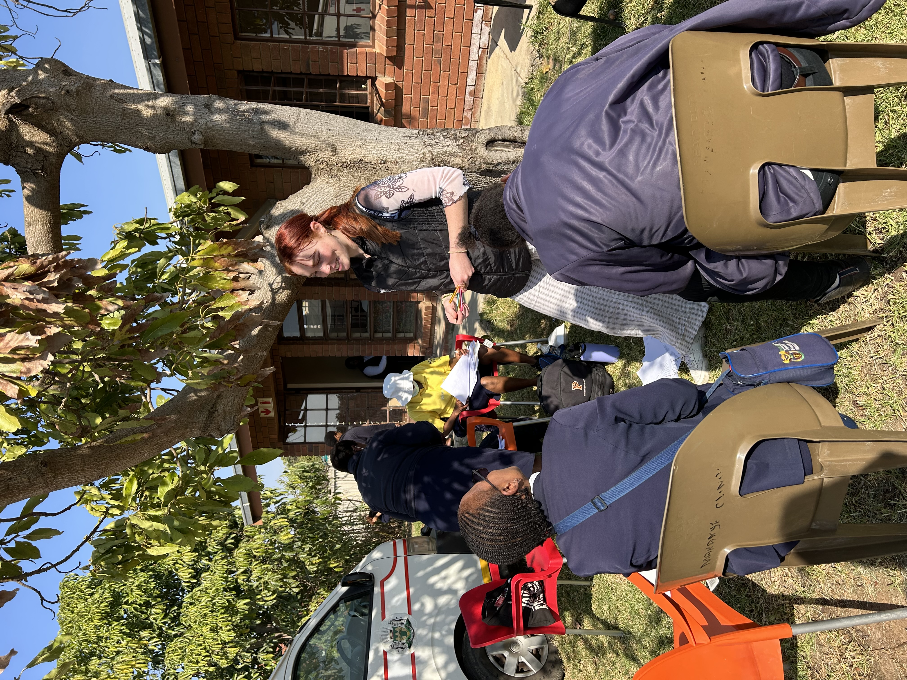
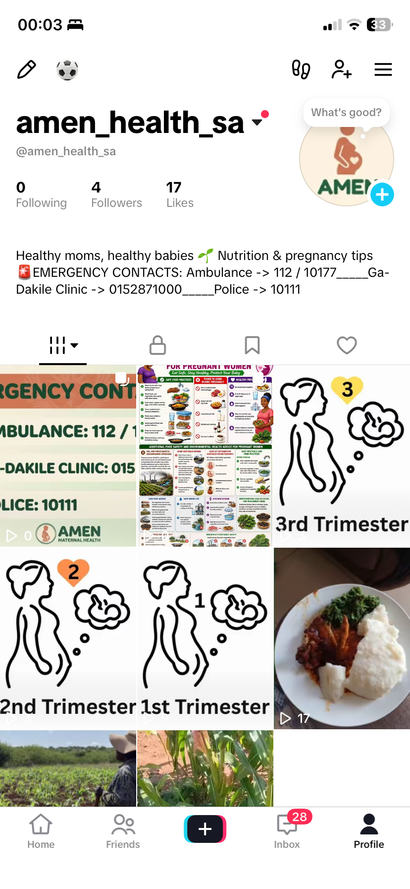
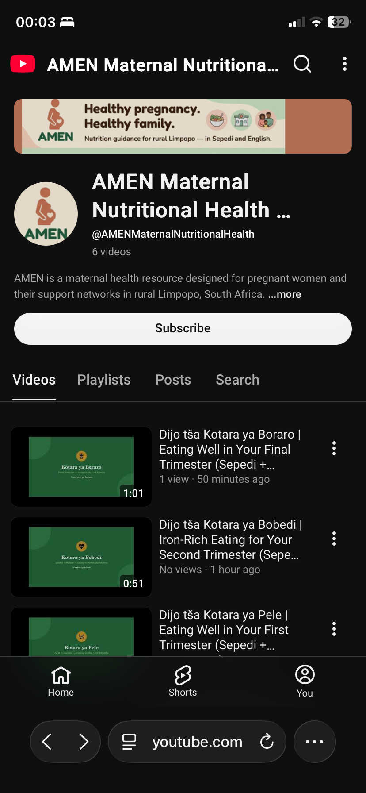
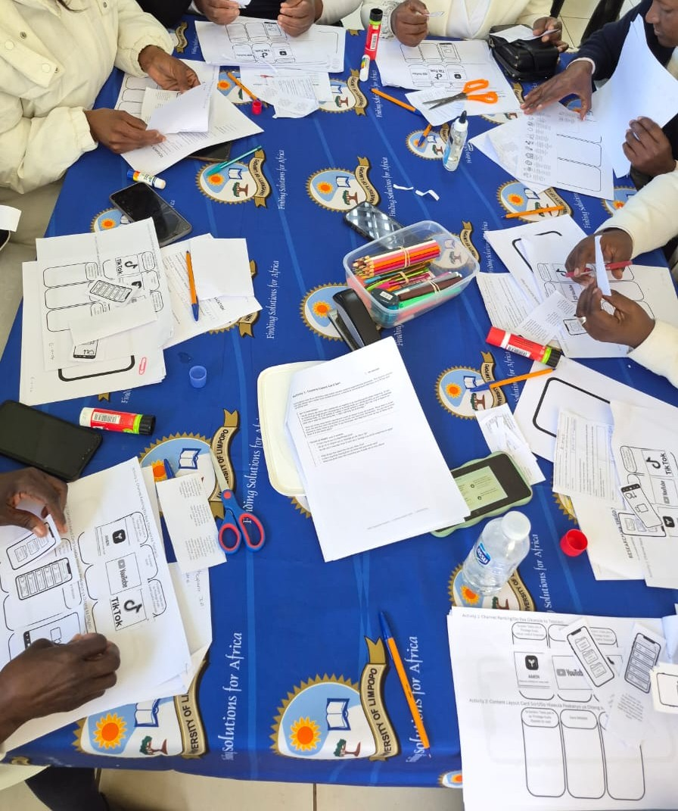

Individual page
Standalone Apps vs. Social Media: A Participatory Evaluation of Digital Maternal Health Delivery in Rural Limpopo, South Africa
Honours in Computer Science, University of Cape Town, 2026
Supervisor: A/Prof Melissa Densmore
Sarah-Jane's part of the project
- The design of the field-work interaction plan and documents
- The analysis of the usability data, co-design outputs, interview data, audio recording transcriptions, and field notes
App development and handover are on Ella Thorburn's page.
Summary
Sarah-Jane designed and ran a three-day, three-site participatory evaluation with pregnant women, community health workers and family decision-makers in rural Limpopo. It compared AMEN, an offline-first maternal health app, with the same content on TikTok and YouTube, using a usability scale, co-design activities, interviews and field notes analysed through reflexive thematic analysis.
The paper finds that no single channel meets this community's needs. AMEN was trusted as a reliable source of clinical content but was hard to use alone, and social media offers the reach that can bring people to it. The results point to a cooperative multi-channel model and design recommendations for similar low-resource, rural settings.
Aims
Aim 1: Compare the channels
Find which combination of channels (an offline-first app, TikTok and YouTube) best meets the community's usability, trust and accessibility needs.
Aim 2: Learn for other settings
Draw out what the comparison reveals about designing digital health delivery for low-resource settings more broadly.
Method
Part A: Try each channel
- Five scenario tasks on each channel, such as finding a supper recipe or locating emergency numbers
- A 10-item rating scale scored 1 (disagree), 2 (neutral) or 3 (agree), read aloud where needed
- Open-ended questions on usability, digital familiarity and cost barriers, in Sepedi and English
Part B: Co-design with cards
- Channel ranking
- Content layout ranking: folders, search bar or swipe feed
- Build your own screen (Day 1 only)
- Feature placement: 14 cards sorted into "app", "social media" or "both"
- Community and sharing map
Physical cards and templates avoided the "blank page problem" for participants who find abstract brainstorming hard. Audio and field notes were captured throughout, and all sources were analysed together with Braun and Clarke's reflexive thematic analysis.
Fieldwork
Fieldwork ran over three consecutive days at three rural clinics in the Capricorn district of Limpopo, timed to each clinic's antenatal visit day. The University of Limpopo already had relationships with each clinic.
Day 1: Evelyn Lekganyane Clinic
Day 2: Makhanye Clinic
Day 3: Ga-Dikgale Clinic

Who took part
Maternal care in rural Limpopo is a shared, communal responsibility, so the study included the people who shape what ends up on the household plate. The decision-makers were mostly grandmothers. Each group worked in its own session so everyone could speak freely.
The three channels
Each channel carried the same trial content, so participants could compare them directly.
AMEN app
A lightweight, offline-first Android prototype that follows WhatsApp's layout, with a folder structure for lessons and filter chips for nutrition categories.

TikTok
A dedicated AMEN channel on TikTok carrying the same trial content. Some pregnant women favoured its familiar swiping.


YouTube
A dedicated AMEN channel on YouTube carrying the same trial content, with bilingual video titles.


Content provided
The content from the University of Limpopo team included raw clinical guidelines, a few audio clips and one localised video on how to start your own home garden. The clinical guidelines were text, so we turned them into PowerPoint slides with icons and bilingual text.
We wanted a more audio-visual approach, but ran out of time and resources. Making audio-visual content with AI would have needed translation and cultural appropriateness checks we could not complete, so a text-heavy approach was the safest option.
Ethics: the TRUST Code
Fairness
Consent forms were read aloud in English and Sepedi, so literacy did not decide who could take part.
Respect
Each group session paired a Sepedi-speaking University of Limpopo facilitator with a UCT member wherever possible.
Care
Snacks and lunch were provided, and mobile hotspots meant nobody used their own data. All data was anonymised and stored in line with POPIA.
Honesty
Participants were told the full application was still under development.
Ethical clearance came from the Turfloop Research Ethics Committee (University of Limpopo) and the Inter-Faculty Research Ethics Committee (University of Cape Town).

Findings
The findings move from what we saw people do, to what they scored, to what they chose in the co-design activities. Each part ends with why it matters for the recommendations in the Discussion.
What facilitators observed
Set-up was hard
On Day 1 the app was shared by QR code over a local hotspot. Older health workers and decision-makers struggled to connect to WiFi, enter passwords and scan the code on low-spec cameras, so facilitators moved to USB sideloading and Quick Share. Some grandmothers had non-smartphone devices and storage was often short, yet people still wanted the app: one pregnant woman offered to delete her photos to make room. This is why we recommend low-data ways of installing and sharing.
Icons over reading
On all three channels, participants often tapped icons by trial and error instead of reading labels. Health workers said they "don't want to read everything", and most chose an English interface even though Sepedi is their first language, because they found reading English easier. This supports visual-first navigation and spoken guidance.
Getting lost
AMEN's nested folders caused navigation errors: one health worker could not find her way back to the home page from a trimester sub-folder. On TikTok and YouTube, people struggled to return to the AMEN profile after a video, and YouTube's autoplay made it worse. Small back buttons and a small bottom navigation bar added to the problem. This is the basis for the hybrid layout with a large exit button.
People did not see what was tappable
- Groups reached the recipe list and assumed the task was done until prompted to tap an item.
- After choosing a language, participants stared at the screen without tapping "Continue".
- Despite a bright red icon, participants on every day missed the Emergency page.
These blind spots explain the weaker navigation and findability scores below, and they are the evidence behind the recommendation to make buttons and cards look tappable.
Usability scores
After trying a channel, each participant rated ten statements from 1 (disagree) to 3 (agree), such as "I would be able to use this on my own" (the full list is in the paper's Appendix B). The ten ratings add up to a score out of 30. Across all 51 participants, AMEN scored highest overall at 25.90, narrowly ahead of YouTube (25.06) and TikTok (24.63).
| Dimension | AMEN | YouTube | TikTok |
|---|---|---|---|
| Trust | 2.96 | 2.89 | 2.86 |
| Findability | 2.52 | 2.33 | 2.66 |
| Navigation | 2.48 | 2.31 | 2.41 |
| Independent use | 2.36 | 2.42 | 2.40 |
The other six dimensions are in the paper's Appendix E.
Within AMEN's own scores, trust was the highest (2.96), and findability (2.52), navigation (2.48) and independent use (2.36) were the lowest. This compares AMEN's dimensions with each other, not AMEN with the other channels. AMEN's navigation score was in fact the highest of the three channels, while TikTok scored higher on findability. The point is the gap inside AMEN: people trusted the content far more than they could find their way around it.
| Group | AMEN | YouTube | TikTok |
|---|---|---|---|
| Health workers (21) | 28.48 | 26.67 | 25.48 |
| Decision-makers (16) | 27.06 | 24.63 | 23.75 |
| Pregnant women (14) | 20.71 | 23.14 | 24.36 |
Splitting the scores by group shows why a single winner is misleading. Health workers and decision-makers scored AMEN highest, but pregnant women scored it lowest and favoured TikTok and YouTube. Decision-makers also rated AMEN well even though facilitators repeatedly had to guide them through basic tasks. This suggests some agreement bias, where people rate generously out of politeness rather than ease, so the scores are best read alongside the observations above.
"The app does not require money, and it is able to help me even when I don't have data."
Channel ranking: which would you use?
In the first co-design activity, each participant placed three cards, one for each channel, in order of which they would be most likely to use to get the AMEN content. Scores run from 1 to 3, and higher means more likely to use.
| Group | AMEN | TikTok | YouTube |
|---|---|---|---|
| Health workers | 2.76 | 1.90 | 1.33 |
| Decision-makers | 2.33 | 2.40 | 1.27 |
| Pregnant women | 1.86 | 2.36 | 1.79 |
Health workers ranked AMEN first by a wide margin, decision-makers placed TikTok just above it, and pregnant women ranked AMEN lowest of the three groups. Low rankings often reflected unfamiliarity rather than dislike: one health worker found YouTube difficult because it was her first time using it.
Layout ranking: which is easiest to use?
The second activity asked participants to rank three ways of organising content, from easiest to hardest: a folder structure, a search bar and a scrollable feed. This shows how content should be presented, whichever channel carries it. Scores run from 1 to 3, and higher means easier.
| Group | Folders | Swipe feed | Search bar |
|---|---|---|---|
| Health workers | 2.19 | 2.00 | 1.81 |
| Decision-makers | 2.00 | 2.27 | 1.73 |
| Pregnant women | 2.00 | 1.71 | 2.29 |
Each group preferred a different layout. Health workers liked folders for organisation, decision-makers liked the swipe feed because it needs no reading or folder navigation, and pregnant women liked the search bar to "find what you want easily". With no clear winner, the recommendation is to combine them.
What co-design showed
Features split across channels
Participants sorted 14 feature cards into "app", "social media" or "both". Core education, such as which foods to eat for a strong baby, went on the app. Clinic reminders, myth-busting and food safety went in "both". Daily tips, week-by-week tracking and sharing went on social media. In other words, participants themselves saw the app as the secure, clinical, offline source and social media as the way to reach people.
Community and sharing maps
In 45 completed maps, participants drew how they wanted pregnancy information to flow around them. Mobile data and WiFi cards were linked to social media, while AMEN was repeatedly annotated as not needing WiFi. WhatsApp was linked to family, TikTok to friends and YouTube to "all people". This again places the app as the data-free source and social media as the connected layer that spreads it.
Two further points shaped the design recommendations. Participants preferred video and audio to text but worried about data cost, so pregnant women suggested ending each video with a summary slide that could be screenshotted. And the sharing cards were the ones most often left unplaced, hinting at hesitation about sharing pregnancy content publicly, so sharing should be private and low-data.
Discussion
No single channel fits everyone
Health workers and decision-makers rated AMEN highest, while pregnant women rated it lowest and favoured the social platforms they already use. Participants also split the features between the app and social media themselves. The paper therefore points to a cooperative model: the app as a trusted, data-free source of clinical facts, TikTok and YouTube for familiarity and reach, and WhatsApp for low-cost, trusted sharing between people.
Trusted, but hard to use alone
Within AMEN's own scores, trust was highest (2.96) and independent use lowest (2.36), with findability (2.52) and navigation (2.48) also at the low end. People valued the content but struggled with the interface, which matches the hidden taps and nested folders we observed. Social media is better placed than the app to draw people in, and improving AMEN's usability is the priority.
Make taps obvious
Participants often did not realise that cards, lists and buttons could be tapped, and missed the Emergency page despite its red icon. Generic icons were not enough. Cards and buttons need to look tappable, and icons should use symbols familiar in Limpopo, ideally checked with the community.
Design recommendations
A hybrid layout
Because each group preferred a different layout, offer folders and search on the home screen and a full-screen scrollable feed inside a folder, with a large exit button so nobody gets lost mid-scroll.
Visual-first navigation
People preferred icons to text, so keep labels short, add a text-size adjuster for users without reading glasses, and draw icons from familiar local symbols such as an ambulance or a clinic building.
Voice guidance
Use raised or shadowed buttons and cards so they look tappable, add optional spoken onboarding in Sepedi and English, and add read-aloud on text blocks, since participants said listening is better.
Role-based modes
Groups showed different design instincts, so offer a clinical mode for health workers, a warmer low-text mode for pregnant women, and a father's mode covering budgeting and emergency transport.
A personalised chatbot
Pregnant women sketched chatbot features themselves. A text or voice chatbot limited to clinically verified content could answer their questions in Sepedi.
Low-data sharing
Data cost was pregnant women's main barrier, so support text-based recipe copying, low-data PDF export via WhatsApp, and peer-to-peer installs by Bluetooth or Quick Share.
These recommendations come from how participants used the screens. The redesigned interface has not yet been independently tested.
Method lessons
- Working prototypes made better probes than mockups: participants engaged confidently with a real app, and the three channels gave them a concrete baseline for the ranking and sorting tasks.
- Keeping task evaluation (Part A) separate from creative co-design (Part B) mattered, because hands-on practice gave participants the vocabulary to design afterwards.
- Written worksheets captured little reasoning, since only a few people wrote justifications, so we relied on audio recordings and field notes instead.
- The community map was hard to explain in words until Day 3, when a worked example with an unrelated scenario made it click.
Limitations
- The 3-point scale reduces fatigue but has known reliability limits, and reading it aloud or scribing answers likely added agreement bias.
- We reached 51 of a planned 54 participants because of antenatal appointments, transport and unexpectedly high health-worker turnout, which left the groups uneven in size.
- Activity 3 was dropped after Day 1 because of fatigue, so its findings come from one clinic only.
- The study covered three clinics in one district, and the redesign recommendations have not yet been tested, so how far the multi-channel model applies elsewhere is open.
Future work
- Research into iconography and imagery, so the app's icons feel familiar to local users.
- A second round of evaluation on the redesigned app, to check whether the changes improve independent use.
- A formal comparison of WhatsApp as a main content channel, since participants consistently chose it for everyday sharing.
- A longitudinal study to see whether a multi-channel approach changes household nutrition habits over time.
Paper Downloads
Interaction documents
These are the documents used in the sessions. Download any of them below.